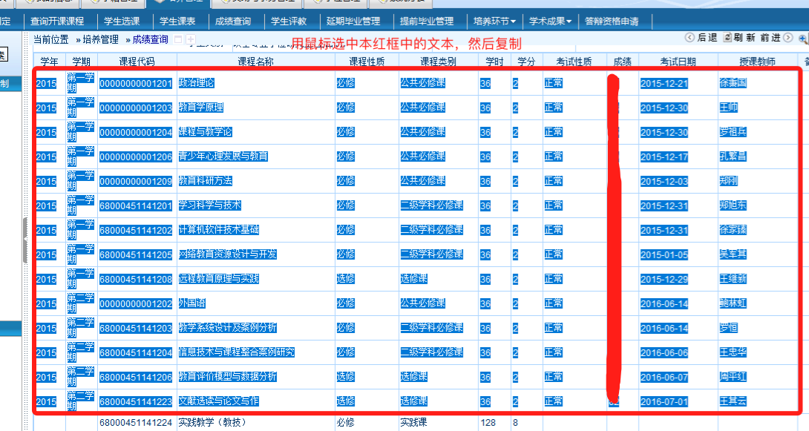

使用方法：登录研究生系统，直接按照下面截图中，复制然后粘贴到下面框中即可

2015 第一学期 00000000001201 政治理论 必修 公共必修课 36 2 正常 62 2015-12-21 徐秉国 2015 第一学期 00000000001203 教育学原理 必修 公共必修课 36 2 正常 65 2015-12-30 王帅 2015 第一学期 00000000001204 课程与教学论 必修 公共必修课 36 2 正常 78 2015-12-30 罗祖兵 2015 第一学期 00000000001206 青少年心理发展与教育 必修 公共必修课 36 2 正常 80 2015-12-17 孔繁昌 2015 第一学期 00000000001209 教育科研方法 必修 公共必修课 36 2 正常 88 2015-12-03 郑刚 2015 第一学期 68000451141201 学习科学与技术 必修 二级学科必修课 36 2 正常 85 2015-12-31 郑旭东 2015 第一学期 68000451141202 计算机软件技术基础 必修 二级学科必修课 36 2 正常 48 2015-12-31 徐家臻 2015 第一学期 68000451141205 网络教育资源设计与开发 必修 二级学科必修课 36 2 正常 87 2015-01-05 吴军其 2015 第一学期 68000451141208 远程教育原理与实践 选修 选修课 36 2 正常 92 2015-12-29 王继新 2015 第二学期 00000000001202 外国语 必修 公共必修课 36 2 正常 60 2016-06-14 鲍林虹 2015 第二学期 68000451141203 教学系统设计及案例分析 必修 二级学科必修课 36 2 正常 90 2016-06-14 罗恒 2015 第二学期 68000451141204 信息技术与课程整合案例研究 必修 二级学科必修课 36 2 正常 98 2016-06-06 王忠华 2015 第二学期 68000451141206 教育评价模型与数据分析 选修 选修课 36 2 正常 93 2016-06-07 周平红 2015 第二学期 68000451141223 文献选读与论文写作 选修 选修课 36 2 正常 72 2016-07-01 王其云
提醒：粘贴前，记得清除上面输入框里的测试数据，请保证粘贴的数据格式，以免影响计算
提取到你的分数列表为：
学分、成绩总和为：
总学分为：
你的平均学分绩是（四舍五入前）：
你的平均学分绩是（四舍五入后）：
返回刚刚那个页面
http://luluhang.cn/ccnuroom